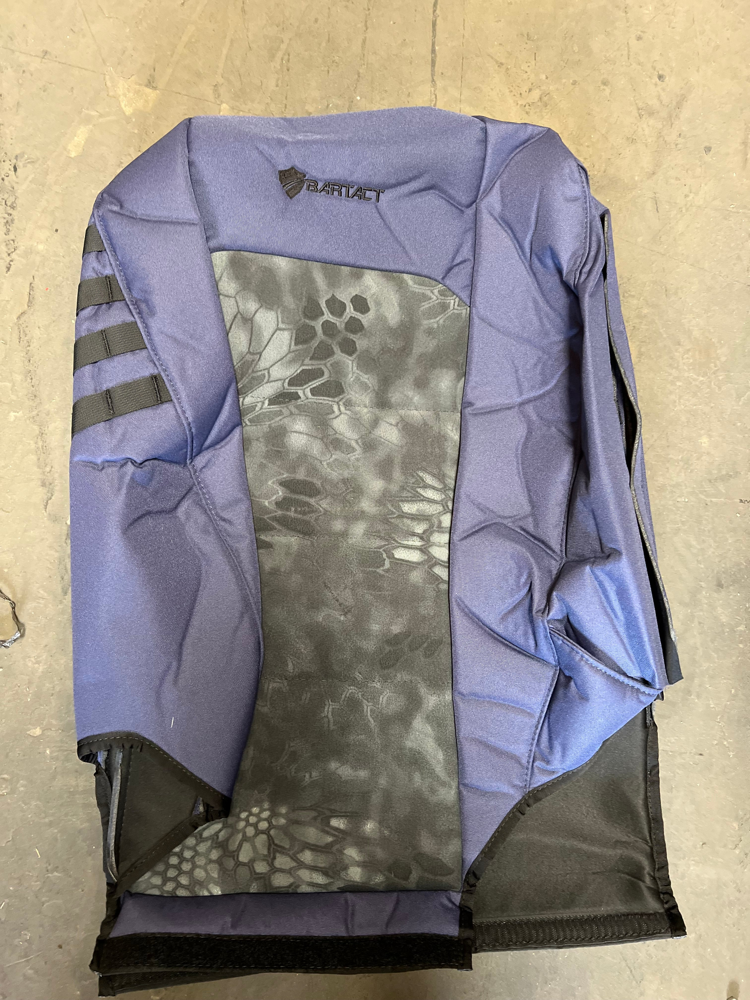
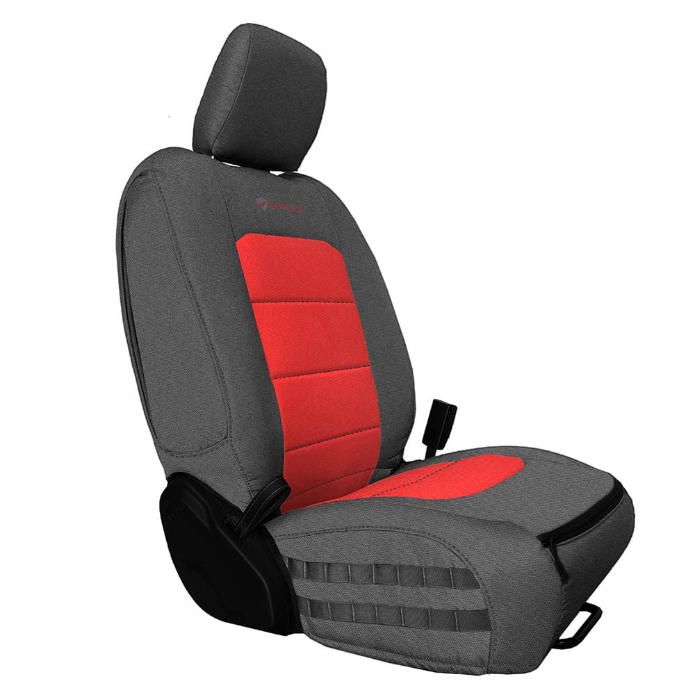

Why JL-Specific Seat Covers Matter

Different Mounting Than JK
The 2018+ JL completely changed the seat frame design. JK covers won't fit. Period. The bolt pattern, headrest integration, and seat shape are all different. Universal covers bunch up, slip, and look terrible.

Integrated Headrests
JL front seats have headrests built into the seat back — not removable like older Wranglers. Your covers need to account for this or you'll be fighting the fit every time you get in.

Fold-and-Tumble Rear
The JLU's rear seats fold and tumble forward. Cheap covers block this mechanism, which means you lose cargo versatility — the whole reason you bought a 4-door.